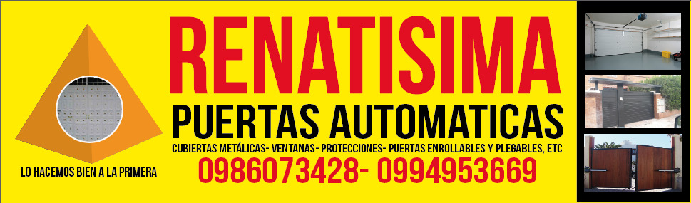
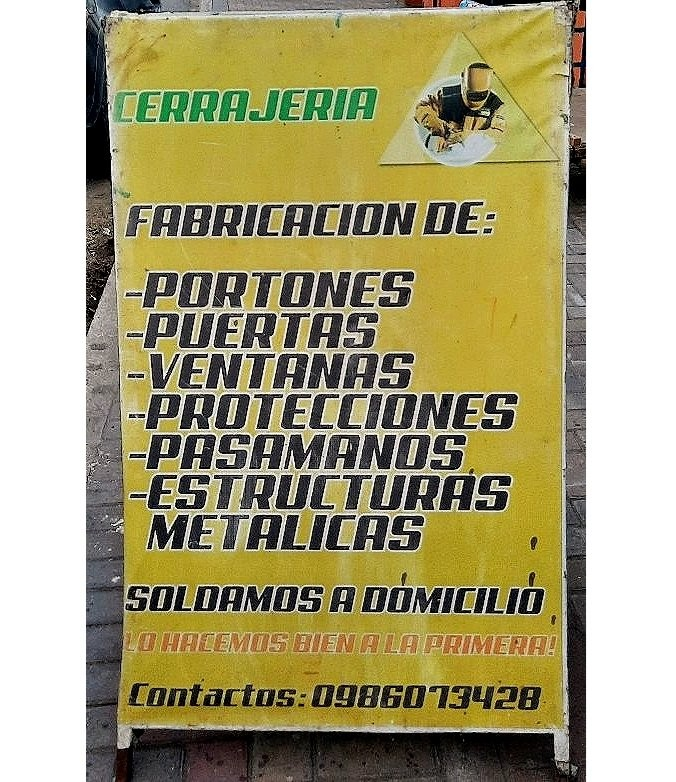

Sean bienvenidos a la página web de la cerrajería "Renatisima".
Si desean saber sobre nuestros servicios y trabajos, quienes somos a profundidad, donde estamos ubicados y sobre como contactarse con nosotros, siguan mirando nuestra página sin ningún compromiso.